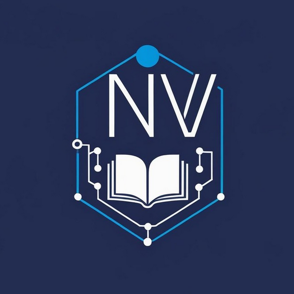
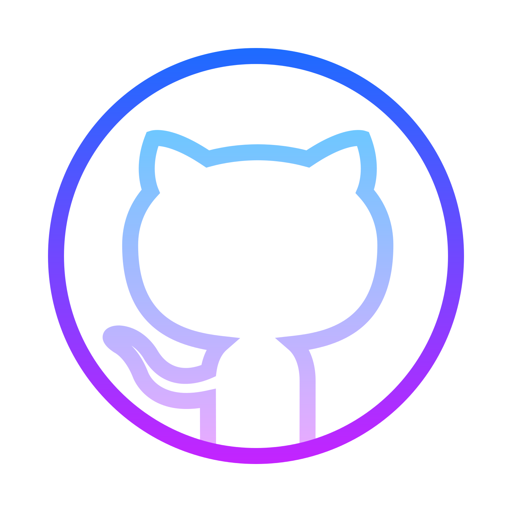

Hola, soy Nancy Vargas
Tecnología · Software · QA & Automatización
Conecto educación y tecnología con el desarrollo de software y QA. Me gusta crear, probar, encontrar mejoras y seguir aprendiendo. Actualmente estudio el Profesorado de Educación Tecnológica y la Tecnicatura Superior en Desarrollo de Software.

01 · Sobre mí
Educación, Tecnología y Software
Soy docente de TICs, Informática y Robótica, curiosa y en constante aprendizaje, desarrollando mi perfil en Desarrollo de Software, QA y automatización.
Combino mi experiencia educativa con la programación y el testing para crear, probar y mejorar soluciones tecnológicas, siempre con curiosidad y atención a los detalles.
Actualmente estudio la Tecnicatura Superior en Desarrollo de Software (IFTS N°29) y el Profesorado de Educación Tecnológica (IES N°2).
- 2025 – hoy Docente de TICs, Informática y Robótica
- 2025 – hoy Tester Freelance (QA) · uTest
- 2026 – hoy Profesorado de Educación Tecnológica · IES N°2
- 2024 – hoy Tecnicatura en Desarrollo de Software · IFTS N°29
02 · Habilidades
Stack técnico
Programación
Datos & Herramientas
Robotica · STEM 2026
Fundamentos de IA · Guayerd-IBM 2025
 Python Programming · Talento Tech 2025
Python Programming · Talento Tech 2025
03 · Fuera del código
Un poco más sobre mí
Apasionada por la tecnología, en especial el hardware.
Lectora de terror — Lovecraft, Stephen King — cómics, manga y anime.
Fotofóbica de corazón: rindo mejor en espacios con poca luz.
Amante de los animales — pedile a mi dragón guardián que se presente.
🐉 Despertar al dragón guardián
El dragón aprueba este código
04 · Contacto
Hablemos
Ya sea un proyecto, un puesto o simplemente para conectar — me encantaría leerte.
- contacto@nancyvargas.com
- Buenos Aires, Argentina
- linkedin.com/in/vargasnancy
-

github.com/LuNanVarg